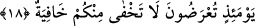

böylece sayıları sekize ulaşacaktır.
Âlimlerden birisi şöyle der: Sonradan eklenecek olan dört melek dört mezhep
imamına işâret etmektedir. Bunlar Ebû Hanife, İmam Şafii, Mâlik ve Ahmed’dir. Çünkü
bu dört imam bugün şer’in taşıyıcılarıdırlar. Kıyâmet günü olduğunda şer’ arşa
dönecektir. Şerîat anlamına gelen şer’ sözcüğü tersinden okunduğunda arş diye okunur
ve böylece o dört imam -hükmen- arşın taşıyıcısı olacaklardır. Bâzı rivâyetlerde sekiz
meleğin ayaklarının yedi kat yerin dibinde olacağı, arşın başları üzerinde bulunacağı ve
onların başları öne eğik biçimde Allah’ı tesbih ederek arşı taşıyacakları ifâde olunuyor.
Peygamber (s.a.) Efendimiz şöyle naklediyor: “Bana arşın taşıyıcıları olan
meleklerden söz etmeme izin verildi. O meleğin kulak yumuşağından omuzuna kadar
olan mesâfe kuş uçuşu ile tam yediyüz yıllık mesâfedir. Melek arşı taşırken nerede
olursam olayım seni tesbih ederim» der.” [69]
Yahya b. Selam der ki: Bana gelen haberlere göre bu meleğin ismi “zükıll”dir. Hasan
Basrî (k.s.)’dan rivâyet olunduğuna göre âyette yer alan “semâniye/sekiz” kelimesinden
maksad sekiz bindir. Dahhak’tan rivâyet olunduğuna göre arşı taşıyan melekler sekiz
saftır. Bunların sayılarını Allah’tan başka hiç kimse bilmez.
Fakir (Bursevi)’ye göre; en uygun görüş birinci görüştür. Çünkü böylesi Allah’ın
azametine ve heybetine en uygun olanıdır. Ayrıca Allah Teâlâ’nın kudretini ortaya koyar.
Çünkü dört rükün, Kâbe’nin dört rüknü gibidir. Kalbin rükünleri de dörttür. Zira kalbin
sağında ruh ve sırr, solunda nefis ve tabîat vardır. Zâhir ve bâtın itibarıyla buradan
sekiz bin sayısı elde edilir. Çünkü elif bir sayısını tafsil edip ayrıntısını gösterir. Şöyle
ki eliften sonra tafsilat olmaz, ancak iki kat itibariyle olabilir. Bu işin gerçeğini ancak
Allah bilir. “Hâ Mîm el-Mü’min” sûresinin baş taraflarında bu makama âid bâzı
gerçekler geçmişti. Şimdi onları burada bir kez daha tekrar etmiyoruz.
et-Tevilâtü’n-necmiyye’de şöyle ifâde olunuyor: Bu âyette zâtî ve gaybî sekiz sıfatı
taşıyan zât arşına işâret olunmaktadır. Bu sıfatlar “zevâtu’s-sıfat”ı taşıma ile vasfedilen
mefâtihûl-gayb/gaybın anahtarlarıdırlar. Sıfatlar, zuhûratu’s-sıfat’ı taşırlar.
18. O gün Allah’a arzolunacaksınız. Size âid hiçbir sır gizli kalmaz.
“O gün Allah’a arzolunacaksınız.” Sorgulanacak ve hesaba çekileceksiniz. Burada
“sorgulanma ve hesaba çekilme” olayı - durumlarını bilebilmesi için askerin sultana
arzolunması olayına benzetilerek- “arzolunma” fiili ile ifâde olunuyor. Arapçada
askerler sultanın önünden geçtiklerinde ve sultan onların durumlarına baktığında bu
olayın ifâdesi için âyette geçen fiilin kökünden olmak üzere “arzu’l-cünûd: askerin
geçişi” denilir. Buradaki hitâb tağlîb yoluyla, kadın erkek bütün herkesedir.
Rivâyete göre kıyâmet günü üç arz olacaktır. Bunlardan iki tanesi özür beyân edip